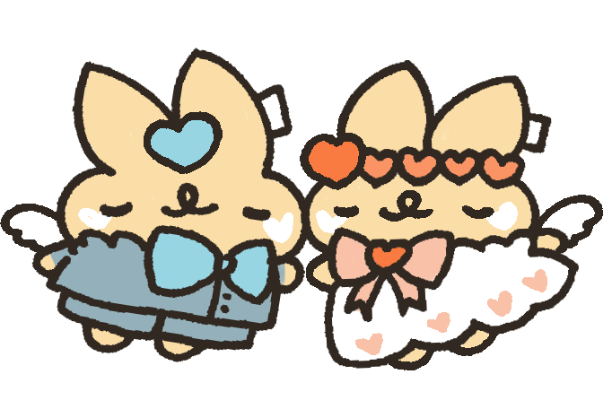
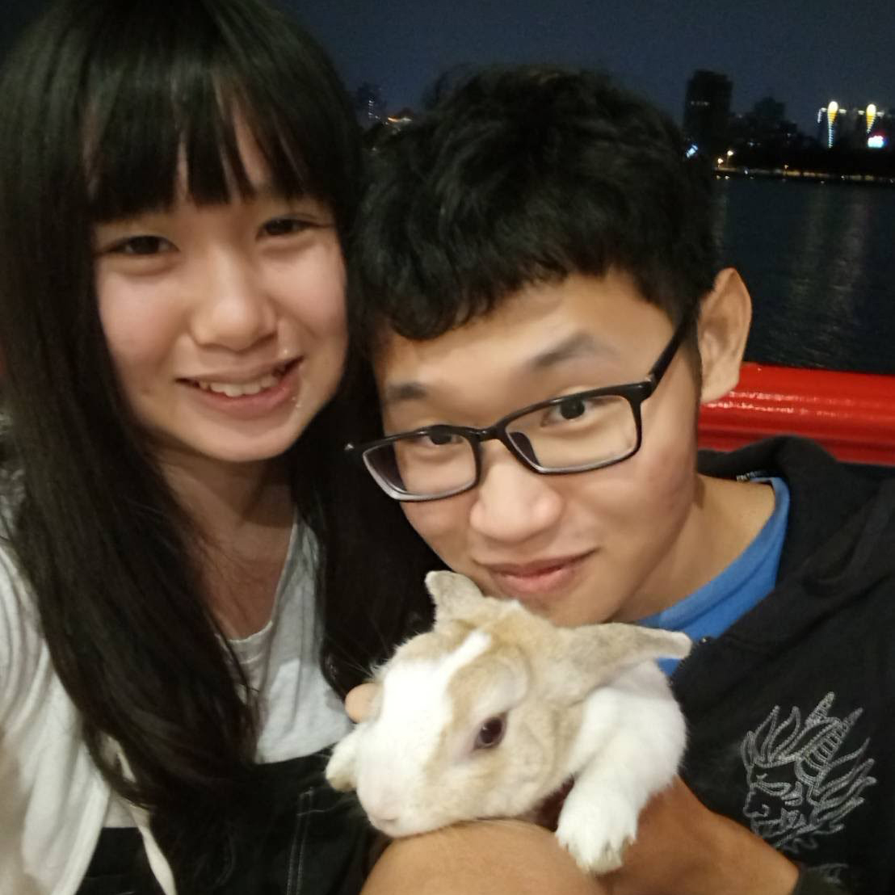
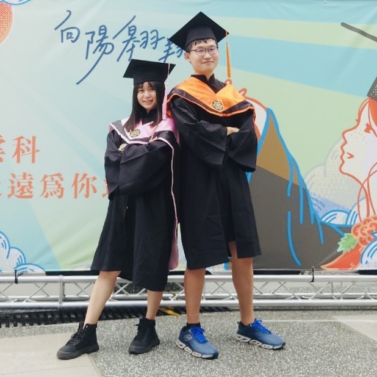
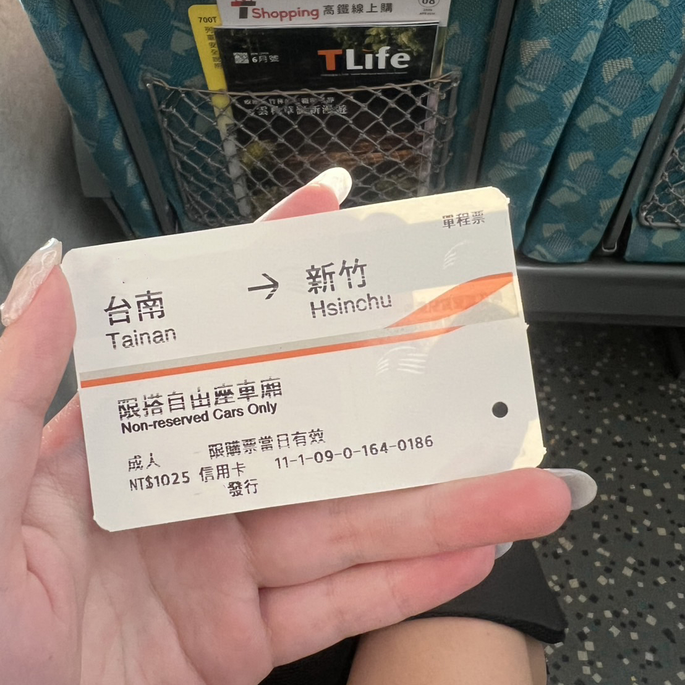
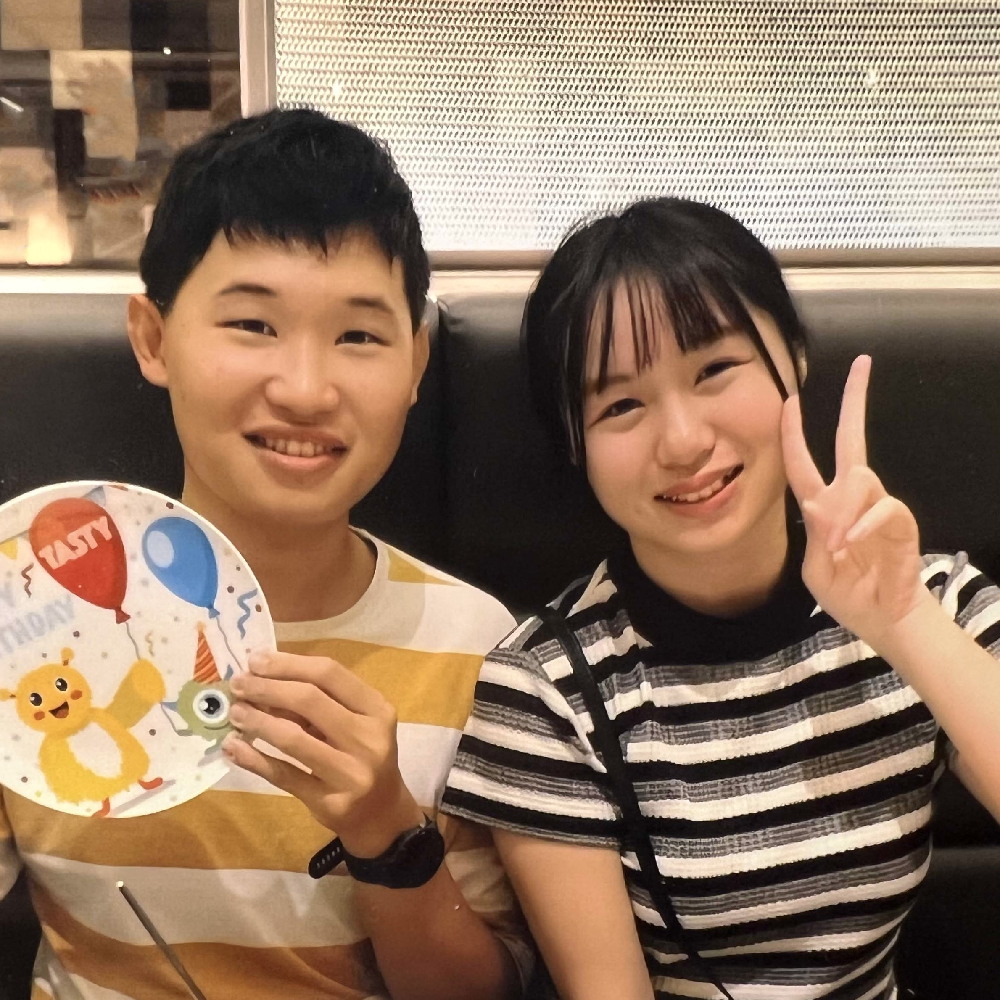
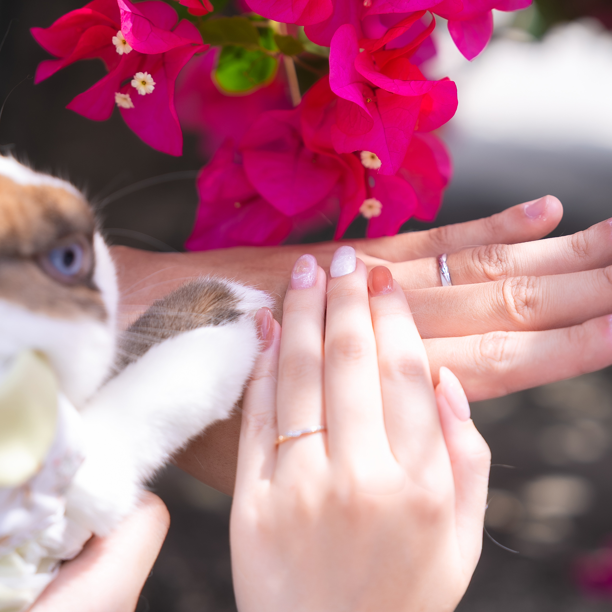

Our Story
從 19 歲的相遇，到9年後決定一起走進人生的下一章， 我們一起長大，也曾隔著城市想念彼此。在3234天的日子裡，最幸運的不是去了多少地方，而是每一段路都還有彼此在身旁。
-

01｜19歲，我們相遇
201719 歲的我們，在台南讀大學的一門通識課中相遇。 從課堂分組競賽的隊友，慢慢培養出革命情感，默默成為彼此生活中重要的人。 沒想到，一堂普通的通識課，就這樣開啟了我們九年的故事。
-

02｜ 青春，一路有你
2019大學畢業後，我們到雲林讀研究所。時常一起寫報告、準備論文，互相鼓勵、扶持，並準時畢業。那些一起熬過的夜，也讓我們更習慣身邊一直有彼此。
-

03｜ 第一次遠距離
2020研究所畢業，我們第一次分隔兩地。一個在新竹，一個在台南。曾經習以為常的見面，變成需要等待的事情，我們也開始了長達四年的遠距生活。
-

04｜ 隔著距離相愛
2022遠距的四年裡，每天的視訊，變成了我們最普通的日常。等到假日，才能真正見上一面。有過想念、有過辛苦，也一起走過彼此的低潮。這段期間，我們也一起養了小兔子『啡啡』，從此兩個人的日常，又多了一位重要的小成員。
-

05｜ 第7年，走向彼此
2024這些年，我們一起旅行，收藏好多兩人的回憶。 從19歲牽起彼此的手，到一起走過學生時代、遠距與生活裡的高高低低。 在第7年的交往紀念日，對於未來，我們有了答案。
-

06｜ 第9年，回到同一個家
2026在一起的第9年，2026.5.15這天，我們登記結婚了。 同時也結束四年的遠距，開始在同一個地方生活、吃飯、回家，一起迎接再平凡不過的日常。 那些隔著螢幕說晚安、期待見面的日子，也終於成為了回憶。 因為每一天，我們都能回到同一個家。